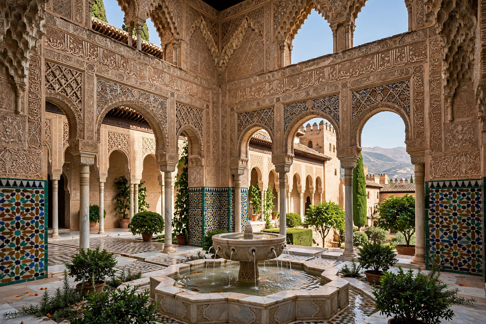

Moorish architecture is a style within Islamic architecture developed in the western Islamic world — the Maghreb (North Africa) and al-Andalus (Islamic Iberia) — between the 8th and 17th centuries. It is characterized by horseshoe arches, muqarnas, geometric and arabesque ornament, calligraphy, colorful tilework (zellij), and courtyards with water features.

| Moorish architecture | |
|---|---|
| Regions | Al-Andalus, Maghreb (Morocco, Algeria, Tunisia) |
| Period | 8th–17th centuries |
| Key monuments | Alhambra, Great Mosque of Córdoba, Kutubiyya, Hassan Tower |
Distinctive elements include the horseshoe arch (sometimes slightly pointed), alternating voussoirs, interlacing arches, carved stucco, carved wood, minarets (square in the Maghreb), and hypostyle mosques. Under the Almohads decoration became more austere; under the Nasrids and Marinids it reached extreme refinement.
The Umayyad Emirate/Caliphate of Córdoba built the Great Mosque (from 785). The Almoravid and Almohad empires unified the Maghreb and Iberia stylistically. Later Nasrid Granada produced the Alhambra. In Morocco, Marinid and Saadian madrasas and palaces continued the tradition.
Moorish forms influenced Mudéjar architecture in Christian Spain and the 19th-century Moorish Revival style in Europe and America.